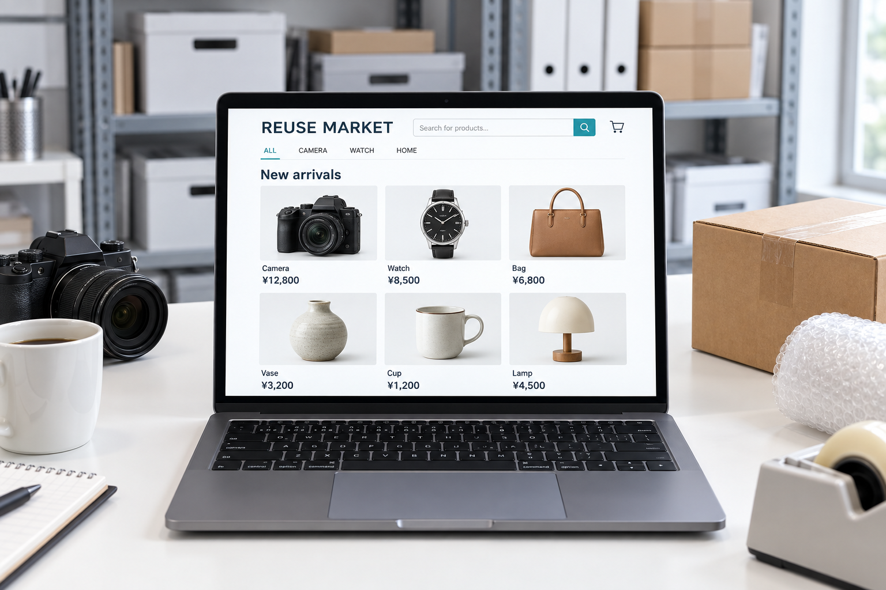

整理から買取・再販売まで、暮らしと法人のご依頼にお応えする６つの事業をご紹介します。
ご遺族に代わり、故人の遺品を丁寧に仕分け・整理いたします。
お元気なうちに、ご自身の手でモノと気持ちを整理する終活サポート。
高齢者・障害者・生活困窮者の住環境を安全に整える整理サービス。
引っ越し前後・空き家・実家じまいの整理をワンストップで。
貴金属・時計・カメラ・骨董・着物・酒類など幅広い品目をお買取。

ヤフオク等のプラットフォームを通じた再販売事業。
お品物の整理から買取、インターネットでの再販売まで、自社で一貫して対応。お客様の手間やご負担を軽減します。